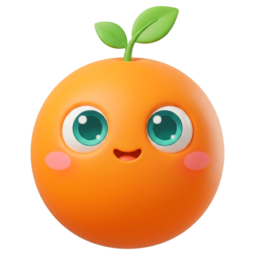

把孩子这一年该做的事，按年龄摆在你面前
建档之后，身体健康、心理成长、财商人格三条线的内容按孩子当前年龄段展开。 顺手记一笔，读一份阶段报告，想不通的事拉着问问聊两句。没有账号、没有服务器，全部记录只在你自己的手机里。
商店审核中，链接就位后这里会自动更新。华为版按渠道要求不含 AI 功能，其余完全一致。
无账号 · 无广告 · 无服务器 · 基础免费 · Pro 一次买断

一岁不会看到零花钱，青春期不会看到刷牙打卡。孩子过生日进入新阶段，整个 App 一起换面板。
每一样都围绕同一个闭环：建档 → 分龄内容与记录 → 阶段报告 → AI 探讨。
内容按 0-1、1-3、3-6、6-12、12-18 分段，一张阶段表统一决定该出现什么。依据国内儿科与发展心理学标准整理。
户外、屏幕、亲子任务、刷牙、今日情绪一张卡点一下就记上，没有完成度的压力。要填表的都一步到位。
六个教养滑块拖一下，九维性格雷达同帧变化。起点按你的教养方式测评预填，旁边叠一组来自真实记录的对照点。
会问今天心情、到点提醒，也能和你探讨一个养育问题。默认只发年龄段和授权摘要，发送前有一张卡逐条列出。
喝水、用药准点响，疫苗按生日排下一针。护眼、早睡、每日赞美等挑战可以并行，打卡是一份达标清单。
每天自动存一份本机快照，导出加密备份，iOS 可放进你自己的 iCloud。合并导入不重复建档，覆盖可撤销。
它住在页面角落里。今天没记心情它会问一句，快到点了在头顶提醒你，戳它三下会害羞地缩回育儿袋。想聊养育问题，点它就行，模型用你自己的 Key。
专家技能包：按主题小额买断，装上后问问在对应话题上更在行。模型仍是你自己的 Key，数据依旧只在本机。首批方向陆续上架。
技能包均为家庭教育参考（非医疗、非心理诊断），一次买断、永久可用，不含在 Pro 里，也不含模型费用。
基础能力免费用；进阶能力 Pro 一次解锁、终生可用；专家技能包按主题小额单独买断。
免费
建档、分龄内容、今天记一笔、系统提醒、阶段报告基础版。不限时间，没有广告。
Pro · 一次买断
同一商店账号下永久有效，换机点「恢复购买」即可取回。没有订阅，没有续费管理，以后调价也不影响已购权益。具体解锁清单以 App 内付费页为准。
专家技能包
单独买断，装上后问问在对应话题上更在行。不含在 Pro 里，也不含模型费用。
价格由各应用商店按你所在地区展示。购买、退款和发票都由商店处理，不经过我们。
成长页的今日速览、性格成长模拟器、疫苗与日常提醒。真实界面截图上架后替换进来。
没有账号，也没有我们的服务器。所有记录存在你手机的本地数据库里，App 不含任何统计或广告 SDK。唯一会联网的是你自己配置 Key 的 AI 调用，默认只发年龄段和趋势摘要，发送前逐条列出。
与结构化数据同一份文本，改答案先改 site.config.json。
一款给 0-18 岁孩子家长用的本地化家庭教育与成长陪伴 App。围绕身体健康、心理成长、财商人格三条线，按孩子年龄段给出记录与指导，闭环是建档、分龄内容与记录、阶段报告、AI 探讨。iOS 和 Android 都有。
没有账号，也没有我们的服务器。所有记录存在你手机的本地数据库里，App 不含任何统计或广告 SDK。唯一会联网的是你自己配置 Key 的 AI 调用，默认只发年龄段和趋势摘要，发送前有一张卡列出每一条要发的内容。备份文件由你自己保管，加密版用口令保护。
下载免费，建档、分龄内容、记一笔、提醒这些基础能力都能用。进阶能力由 Pro 一次买断解锁，永久可用，没有订阅、没有广告。另有按主题的专家技能包，小额单独买断，装上后问问在对应话题上更在行；技能包不含在 Pro 里，也不含模型费用。具体价格以你所在地区的商店页为准，换机后在付费页点「恢复购买」即可取回权益。
需要你在 App 里填一个大模型服务商的 API Key，费用由你和服务商结算。请求默认只包含孩子的年龄段和你授权范围内的趋势摘要，例如生长百分位区间、习惯打卡天数、任务完成率；不发姓名、生日、身高体重明细，财商数据默认关闭。每类数据有单独开关，发送前的取数说明卡逐条列出实际注入的内容。
在「我的 → 数据与备份」导出一份备份文件，加密版需要设口令；把文件发到新手机，在新手机的同一页面点「从备份恢复 → 从文件里选」。iOS 上打开 iCloud 私有备份后，同一 Apple ID 的新设备可以直接选「iCloud 里的备份」。导入可选合并或覆盖，合并不会重复建档，覆盖前会自动存快照，24 小时内可撤销。